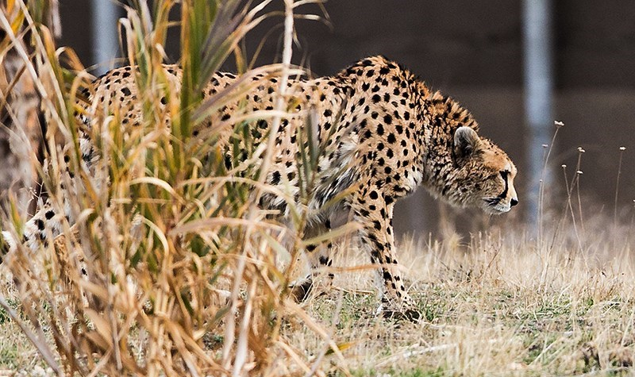
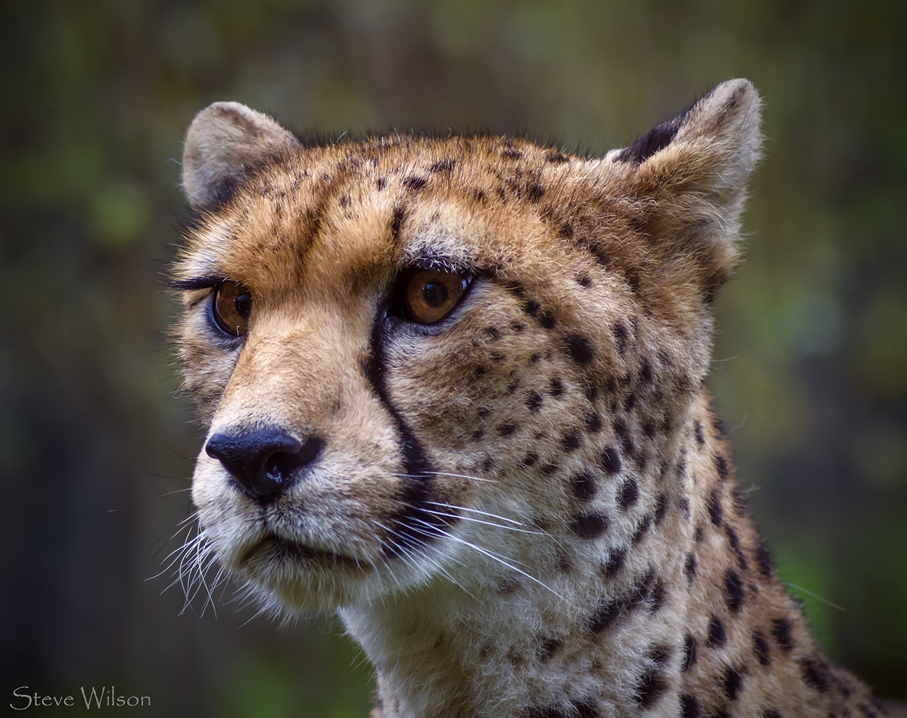
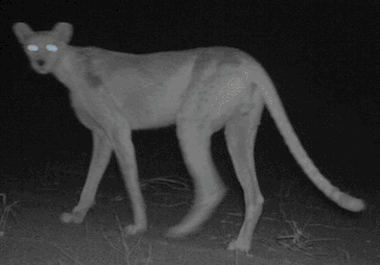

Asiatic Cheetah
The Asiatic cheetah (Acinonyx jubatus venaticus), also known as Iranian or Persian cheetah, is a Critically Endangered cheetah subspecies surviving today only in Iran.It once occurred from the Arabian Peninsula and the Near East to the Caspian region, Kyzylkum Desert, Pakistan and India, but has been extirpated there during the 20th century.
East African cheetah
The East African cheetah, is a cheetah population in East Africa. It lives in grasslands and savannas of Tanzania, Kenya, Uganda and Somalia. The cheetah inhabits mainly the Serengeti ecosystem, including Maasai Mara, and the Tsavo landscape.
A cheetah from British East Africa was described by the American zoologist Edmund Heller in 1913.


Southeast African Cheetah
The Southeast African cheetah (Acinonyx jubatus jubatus) is the nominate cheetah subspecies native to East and Southern Africa.The Southern African cheetah lives mainly in the lowland areas and deserts of the Kalahari, the savannahs of Okavango Delta, and the grasslands of the Transvaal region in South Africa. In Namibia, cheetahs are mostly found in farmlands.